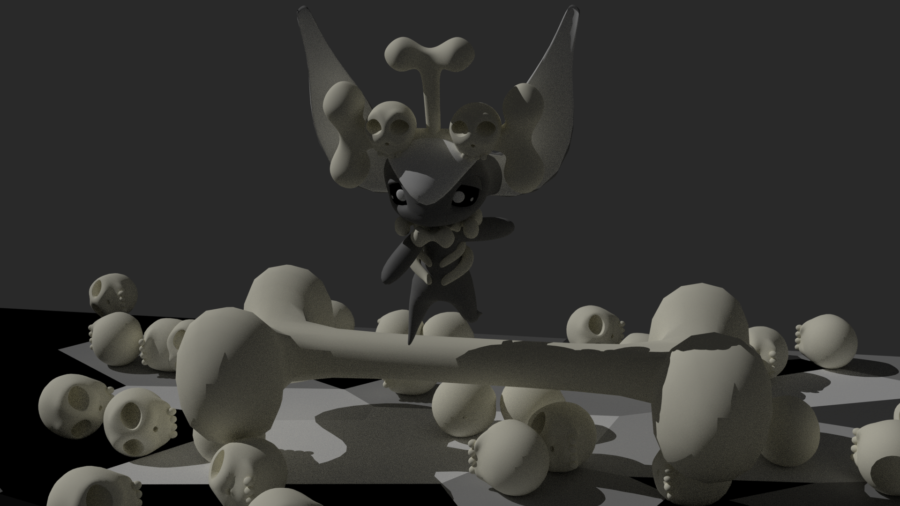
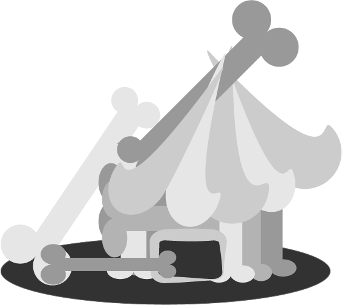

Their eyes and bodies are a monochrome mix of black and white, they never leave them equally colorless lands, that keep away all other imps. The sky is a constant shade of gray
A Pride Imp exploring the bones and having fun.
Prideful imps are monochromic, their bodies are either black or white. Their need to be self-sufficient drives them to use the bones of their ancestors and relatives to create potions and weapons to fight with. They also are held in high regard, due to the bones, they wear on their bodies that come from the imp graveyard, where the grand imp of death lays. Their abilities allow them to take a bone from their body and grow a new one in its place. Their bodies are incapable of remaining incomplete as their unwavering will in their abilities have made them almost indestructible are less fearful of death. Their lands are barren on only have bones, so they really see anything with a color other than the colors in the sky. Anything that is not a monochromic color, that ventures into their territory is killed off, due to the imp of death feeding off of the vibrant colorful life coming from that creature. The Prideful imps are immune to this treatment and keet the grand imp of death starved of life, to keep it contained. The very fact that their vigilance over their land, halts the destruction of all of Impla, give them a lot of pride and makes them arrogant. The Prideful imps will only tolerate the company of other races of imps if they can be the leader and call the shots. Imps that leave the graveyard, like the imps the player has, are seen as lesser than the imps in the graveyard, by said imp. The imps that leave contribute their bodie’s magical healing properties to other imps, and despite their conceded attitudes, are welcomed by the other races of imps.
These fruits are grown from death plants and eaten by these imps, they are quite bitter.
These fruits are grown on death plants and taste very bland. They can be used as a glue-like substance.
The bones in the Pride territry are treated with respect and used in the Pride Imp's daily lives.
A house usually found in the Pride village, they are comprised of bones, the black tar-like fruit, and the white glue like fruit to keep the structure together.